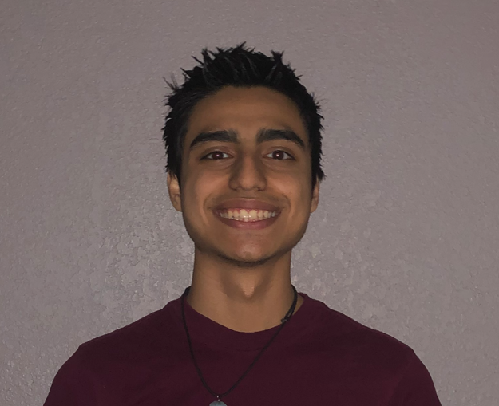

Caleb VillarrealTestTestTest
 Hello! My name is Caleb Aaron Villarreal, and I am a computer science student at Texas A&M University here in College Station. I was born in Weslaco, a Texas city just north of the Mexican American border. I see myself in a broad range of fields of specialty but am particularly interested in cybersecurity. I hope to utilize the knowledge I have gained here at Texas A&M by contributing to something impactful and meaningful in order to make people’s lives easier, move convenient, and better overall.
Since I was young, I’ve had an incredible interest in electronics. My interest in software in particular started from my fascination with video games. I learned how file-systems worked, how to mod the games, and how to use exploits to gain elevated privileges on my devices. I also learned how command-line syntax worked since many games utilize their own type of ‘console’ to manipulate attributes of the game. Once I was a little older, I did research on how to build my own personal computer in order to gain better performance on the games I played. This helped me to better understand the different hardware components that make up computers.
I also learned a lot about virus removal when I started working at my father’s electronic repair shop. I became even more familiar with Windows-based operating systems during this time, and I also gained experience with interacting with customers and understanding their needs.
I first started learning to code in high school in a general engineering class. I worked on basic problems in python and helped develop code for a robotics competition called HESTEC for the University of Texas Rio Grande Valley in 2018. Once I started taking classes here at Texas A&M, I started learning exponentially more material, and am now proficient in many coding languages, data structures, algorithms, and have developed a couple projects.